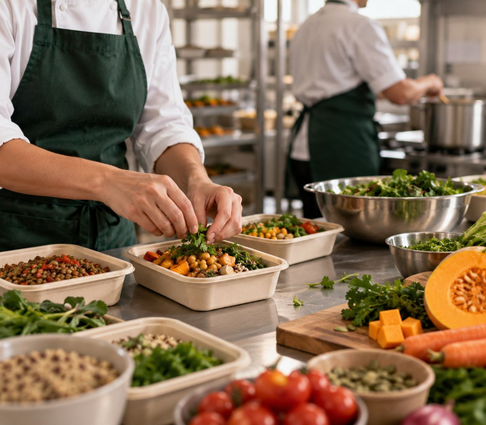

Nuestro origen
Cocinamos lo que nos hubiera gustado encontrar
füel. nació de una semana cualquiera: poco tiempo, ganas de comer bien y ninguna opción que no fuera delivery de último momento.

01
Comida real, sin atajos
Cocinamos con ingredientes frescos y de estación, sin conservantes ni azúcar agregada.
02
Congelado el mismo día
Ultracongelamos a −18 °C apenas sale de la cocina. Así conserva textura y nutrientes por tres meses.
03
Pensado para tu semana
Porciones medidas, macros visibles y un menú que rota para que no te aburras.